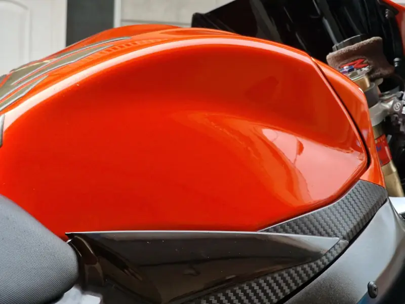
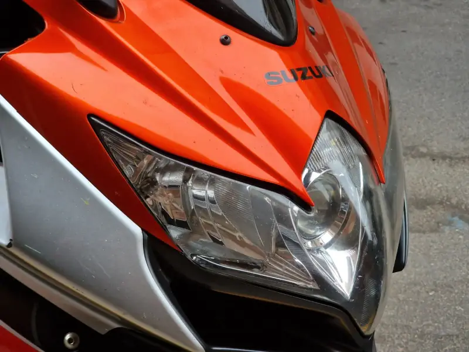
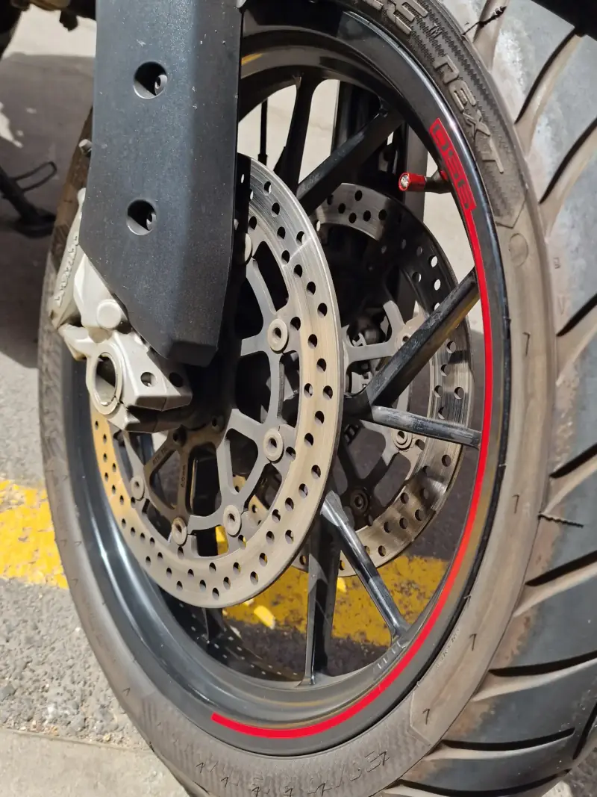
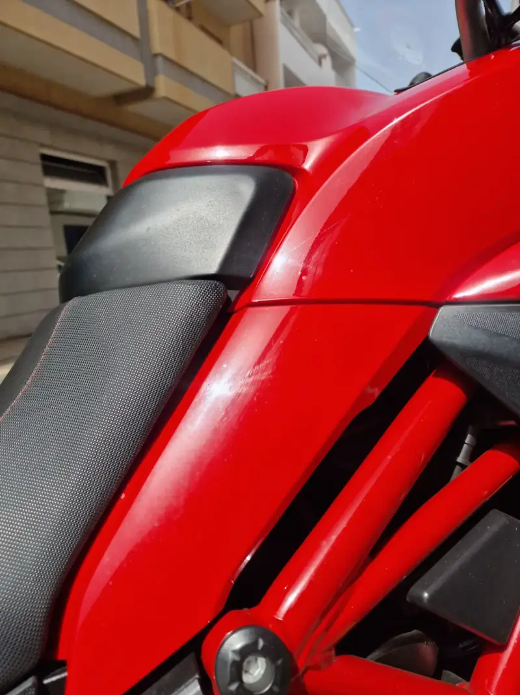
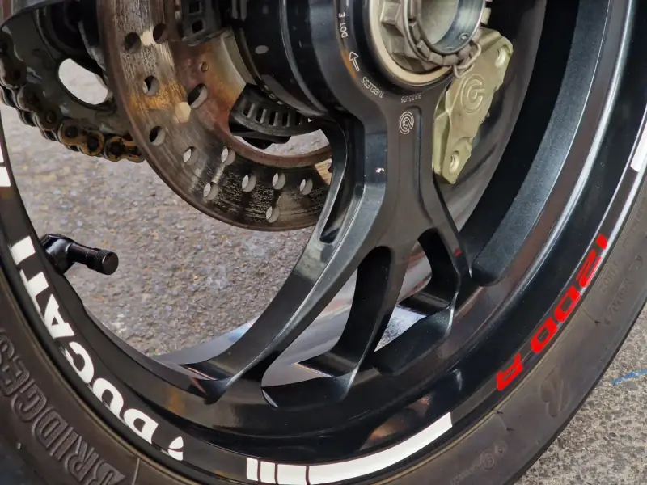

01
Limpieza total
Tu moto de arriba abajo: carenados, depósito, llantas, motor y escape. Que brille hasta el último rincón.
Limpieza de motos a domicilio · Tenerife
Voy a tu garaje y te la dejo brillante como el primer día. Motero a motero.

Cómo funciona
Mándame un mensaje con tu moto y lo que necesita, y te respondo con el presupuesto.
Quedamos el día que te venga bien y voy yo. Tu moto no sale de casa.
La limpio a fondo, como si fuera la mía, y queda lista para lucirla en tu próxima salida.
Servicios
01
Tu moto de arriba abajo: carenados, depósito, llantas, motor y escape. Que brille hasta el último rincón.
02
La cadena, limpia y bien engrasada. Lo puedes sumar a la limpieza total.
Coches
También limpio coches a domicilio. Escríbeme y lo hablamos.
Presupuesto por mensaje · Servicio a domicilio en Tenerife
Trabajos recientes
Fotos reales de motos de clientes, al terminar el trabajo.
Limpieza total + engrasado de cadena



“Los resultados hablan por sí solos.”
Limpieza total




“El rojo hace que se aprecie la limpieza.”
Limpieza total + engrasado de cadena


“Brillante como el primer día, sin sacarla del garaje.”
Motero a motero
Soy Pedro, y también soy motero. Sé lo que es querer la moto impecable para la próxima salida y no tener tiempo, o sitio, para dejarla así.
Por eso voy yo a tu garaje.
Pedro · @pedromotocare
Escríbeme por Instagram con tu moto (o tu coche) y te respondo con el presupuesto.